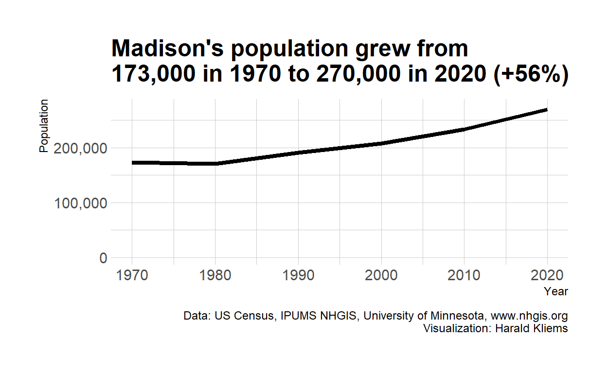
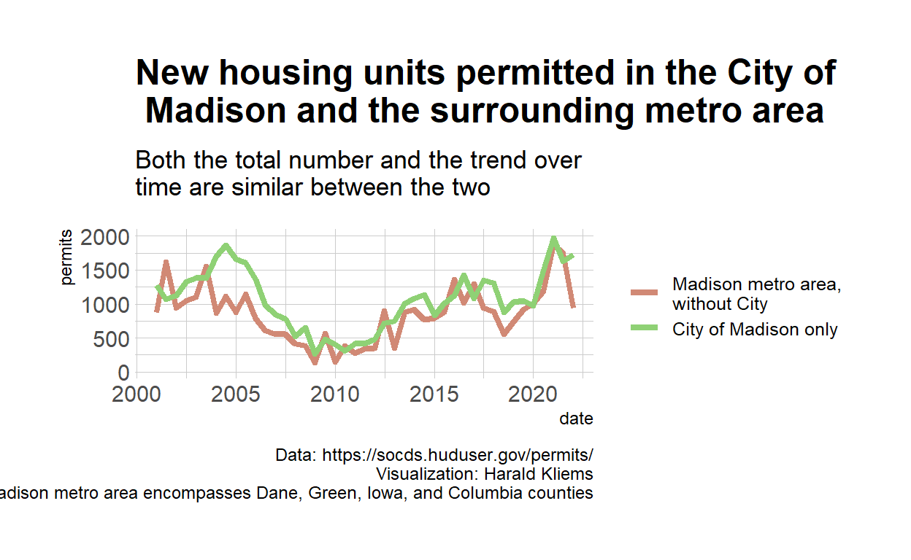
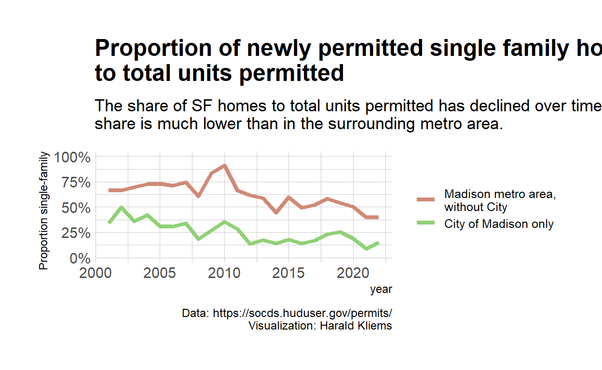

A look at housing permit data over time.
Much of the US is in a housing crisis, and Madison is no exception. Our population is growing, and the growth of housing stock has not kept pace, leading to higher rents and real estate prices. There have been iniatives to increase the production of housing, but how successful have they been? Inspired by a thread on Twitter, this post looks at building permit data.
Madison has been and continues to be one of the fasted growing cities in the state of Wisconsin. Between 1970 and 2020, the city added almost 100,000 new residents. That is an increase of about 56 percent.1
# Population time series Madison city
pop <- read_csv("data/nhgis0002_ts_nominal_place.csv")
pop %>%
filter(NHGISCODE == "G55048000" & YEAR %in% c("1970", "1980", "1990", "2000", "2010", "2020")) %>%
# mutate(difference = AV0AA - lag(AV0AA)) %>%
# relocate(difference)
ggplot(aes(as.numeric(YEAR), AV0AA)) +
geom_line(size = 1.5) +
xlab("Year") +
ylab("Population")+
scale_y_continuous(labels = scales::comma, limits = c(0, 275000)) +
theme(panel.grid.minor.x = element_blank()) +
labs(caption = "Data: US Census, IPUMS NHGIS, University of Minnesota, www.nhgis.org\nVisualization: Harald Kliems",
title = "Madison's population grew from\n173,000 in 1970 to 270,000 in 2020 (+56%)") +
hrbrthemes::theme_ipsum_rc()

These new residents all need housing, and in general household sizes have been shrinking, requiring even more housing units. What does housing production look like in the city and the surrounding metro area?
The Office of Policy Development and Research within the Department of Housing and Urban Development (HUD) keeps track of building permits issues on a monthly basis. Monthly data is choppy: A single large development can easily throw off the total in a month. Thus we look at the data in half year periods:
# housing permits Madison city
permits <- read_csv("data/BuildingPermits(1).csv")
#housing permits for Madison CBSA
CBSA <- read_csv("data/BuildingPermits - Madison CBSA.csv")
# combine and prep city and CBSA data
permits_all <- permits %>%
rbind(CBSA) %>%
filter(Location == "Madison, WI" | Location == "MADISON") %>%
mutate(date = ym(paste(Year, Month)),
quarter = quarter(date),
semester = semester(date),
place = case_when(Location == "MADISON" ~ "City of Madison",
Location == "Madison, WI" ~ "Madison metro area")) %>%
filter(date < ymd("2022-07-01")) #remove 0 values for future months
permits_all %>%
filter(`Series Code` == 1) %>% #total units
group_by(Year, semester, place) %>%
summarise(permits = sum(Permits), date) %>%
distinct(Year, semester, permits, place, .keep_all = T) %>%
pivot_wider(names_from = place, values_from = permits) %>%
mutate(metro_without_city = `Madison metro area` - `City of Madison`) %>%
pivot_longer(cols = c(metro_without_city, `City of Madison`, `Madison metro area`), names_to = "place", values_to = "permits") %>%
filter(place %in% c("metro_without_city", "City of Madison")) %>%
ggplot(aes(date, permits, color = fct_reorder(place, permits))) +
geom_line(size = 1.5) +
ylim(0,2000)+
hrbrthemes::scale_color_ipsum(name = NULL, labels = c("Madison metro area,\nwithout City", "City of Madison only")) +
hrbrthemes::theme_ipsum_rc() +
theme(legend.position = "right") +
labs(title = "New housing units permitted in the City of\n Madison and the surrounding metro area", subtitle = "Both the total number and the trend over time are similar between the two",
caption = "Data: https://socds.huduser.gov/permits/\nVisualization: Harald Kliems\nMadison metro area encompasses Dane, Green, Iowa, and Columbia counties")

Housing production in the City of Madison was strong during the early aughts. And in the surrounding metro area it was even stronger. But once the financial crisis hit, it took almost a decade until housing construction returned to previous levels. We can also see the shock the early stage of the COVID-19 pandemic, and how that permitting backlog cleared over the course of 2020.
How do the 946 units permitted in Madison in the first half of 2022 compare to other cities? Not too badly:
Some other housing start totals at the half-year mark:
— Alex Schieferdecker (@alexschief) August 2, 2022
Seattle: 5,542 units
Denver: 4,707 units
Boston: 2,610 units
Washington: 2,471 units
Philadelphia: 1,265 units
Portland: 873 units
San Jose: 854 units
Oakland: 755 units
San Francisco: 660 units (lol, lmao) https://t.co/137zelFEsN
We permitted more units than Portland (pop 652k), Oakland (441k), San Jose (1,013k), and San Francisco (874k)!
The previous section describes the growth in total units of housing. But were these newly permitted units single-family homes or parts of multi-family housing?
permits_all %>%
filter(`Series Code` <= 2) %>%
pivot_wider(names_from = Series, values_from = Permits, id_cols = c(Location, Year, Month)) %>%
janitor::clean_names() %>%
mutate(location = case_when(location == "Madison, WI" ~ "madison_metro",
location == "MADISON" ~ "madison_city")) %>%
group_by(year, location) %>%
summarise(total_units = sum(total_units), sf_units = sum(units_in_single_family_structures)) %>%
pivot_wider(names_from = location, values_from = c(total_units, sf_units)) %>%
mutate(metro_without_city_sf = sf_units_madison_metro - sf_units_madison_city,
metro_without_city_total = total_units_madison_metro - total_units_madison_city,
prop_sf_madison_city = sf_units_madison_city/total_units_madison_city,
prop_sf_metro_without_city = metro_without_city_sf/metro_without_city_total) %>%
select(year, starts_with("prop")) %>%
pivot_longer(cols = starts_with("prop"),
names_to = "place",
values_to = "prop_sf",
names_prefix = "prop_sf_") %>%
ggplot(aes(year, prop_sf, color = fct_reorder(place, -prop_sf))) +
geom_line(size = 1.5) +
labs(title = "Proportion of newly permitted single family homes\nto total units permitted",
subtitle = "The share of SF homes to total units permitted has declined over time. In the City of Madison the\nshare is much lower than in the surrounding metro area.",
caption = "Data: https://socds.huduser.gov/permits/\nVisualization: Harald Kliems",
x = "year",
y = "Proportion single-family") +
hrbrthemes::scale_color_ipsum(name = NULL,
labels = c("Madison metro area,\nwithout City", "City of Madison only")) +
scale_y_continuous(labels = scales::percent_format(accuracy = 1),
limits = c(0,1)) +
hrbrthemes::theme_ipsum_rc()

It is probably no surprise that in the metro area, single-family homes make a higher share of newly permitted units than in Madison. But both in the metro area and the city, the proportion of newly built single-family homes has sharply declined from its heights during and shortly after the Great Recession. In the city, only about 20% of units built are single-family homes, and in the metro area the share has dipped below 50% in recent years.
Some part of the growth is the result of expanding city limits; however, in general the newly annexed areas did not have large populations.]↩︎
If you see mistakes or want to suggest changes, please create an issue on the source repository.
Text and figures are licensed under Creative Commons Attribution CC BY-SA 4.0. Source code is available at https://github.com/vgXhc/madison_housing_permits, unless otherwise noted. The figures that have been reused from other sources don't fall under this license and can be recognized by a note in their caption: "Figure from ...".